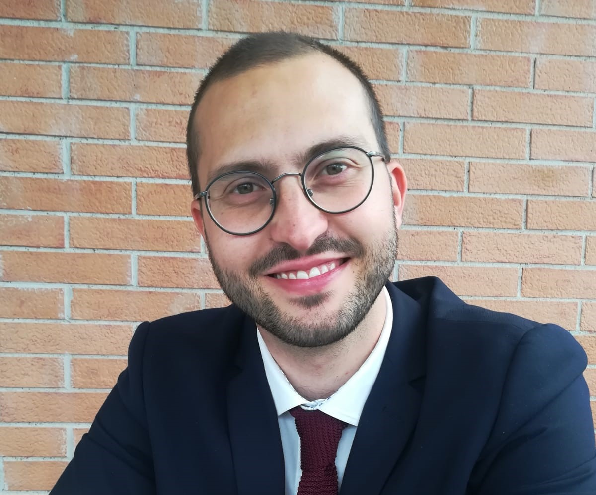

← People

CeC
Alessandro Borghesi
Coordinator, CeC
Sophia University Institute
Alessandro Borghesi is a researcher at the Sophia University Institute and coordinates CeC, the Research Unit on Christianity and Culture.
The Unit investigates the role of Christianity as a culturally generative force in the modern and post-secular world, working across the genealogy of modernity, personalism, the relationship between Christian anthropology and the democratic order, the theological-political problem, and Christian philosophies of peace.